Lecture 7: Machine Learning, AI and Their Limits; Exam Review
Daniel Traian PELE
Bucharest University of Economic Studies
IDA Institute Digital Assets
Blockchain Research Center
Master Blockchain for Business (MBB), FABIZ
26 November 2026
Lecture 7: Machine Learning, AI and Their Limits; Exam Review
Lecture 7: Machine Learning, AI and Their Limits; Exam Review
Daniel Traian PELE
Bucharest University of Economic Studies
IDA Institute Digital Assets
Blockchain Research Center
Master Blockchain for Business (MBB), FABIZ
26 November 2026
“Even when no exploitable forecasting relation exists, looking long enough and hard enough at a given set of data will often reveal one or more forecasting models that look good, but are in fact useless.” — White (2000)
The question of the lecture is whether machine learning and pretrained AI models forecast crypto returns and crypto risk better than the statistical models of Lectures 2–6, and how to test this honestly. Lecture 6 introduced the basic safeguards: separate training, validation and test periods, and a benchmark without the new information. This lecture adds three more: refitting the model step by step as time passes (walk-forward evaluation), accounting for searches over many rules, and checking whether a pretrained model has seen the test data.
The route has five parts. The first asks whether three classifiers, a logistic regression, a random forest and gradient boosting, can predict the direction of Bitcoin's daily return. The second shows what happens when 810 trading rules are tried and the best one is kept. The third compares classical, ML and pretrained models for Value-at-Risk. The fourth lists the limits of ML and AI in crypto finance, and the fifth reviews the course for the exam. All estimates use daily Bitcoin prices and volumes from EODHD, 2015 – 23 October 2026.
In brief
The tools of the lecture come from a small set of papers. Koenker & Bassett (1978) introduced quantile regression, the basis of the quantile models for Value-at-Risk, and Pesaran & Timmermann (1992) the test of directional accuracy. White (2000) proposed the "reality check" for data snooping, and Bailey & López de Prado (2014) the deflated Sharpe ratio. Gneiting & Resin (2023) study calibration diagnostics and the optimal shift of a forecast, the subject of the Appendix.
The pretrained forecasting model is Chronos-2 of Ansari et al. (2025); the explanations of model predictions use SHAP (Lundberg & Lee, 2017). The zones for backtesting a Value-at-Risk model come from the market-risk standard of the Basel Committee on Banking Supervision (Basel Committee, 2019). Two video units on Quantinar accompany the lecture. The estimates marked "own" were computed for this lecture in Python, with the packages `scikit-learn`, `xgboost`, `shap`, `arch`, `statsmodels` and `chronos-forecasting`; the notebook of Lecture 7 reproduces them.
In brief
scikit-learn, xgboost, shap, arch, statsmodels, chronos-forecasting); numbers marked “own” are estimated for this lectureEven when no exploitable forecasting relation exists, looking long enough and hard enough at a given set of data will often reveal one or more forecasting models that look good, but are in fact useless.
Machine learning (ML) and pretrained artificial intelligence (AI) models are now standard tools in finance. Software libraries fit a random forest or a gradient-boosting model in a few lines of code, and pretrained forecasting models return a full forecast distribution for any series without being fitted to it. In crypto markets, where data are public and plentiful, claims that such models predict prices are common.
The lecture asks two practical questions. Do these models forecast crypto returns and crypto risk better than the statistical models of Lectures 2 to 6? And how can an analyst find out without fooling himself or herself? The second question is the harder one. A flexible model can fit the past almost perfectly, a search over many trading rules always finds a winner, and a pretrained model may already have seen the period on which it is tested. Each of these makes a model look better than it is.
The data are daily Bitcoin prices and trading volumes from EOD Historical Data (EODHD), from 2015 to 23 October 2026. The lecture uses them for three tests: forecasting the direction of tomorrow's return, selecting a trading rule among 810 candidates, and forecasting Value-at-Risk with six models. It then lists the limits of ML and AI in crypto finance and closes with a review of the course for the exam.
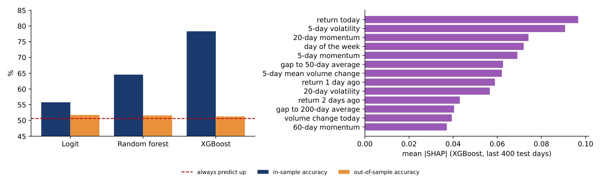
The Appendix holds optional material on correcting a risk forecast with its own past errors; it is not examined.
The simplest forecasting task for a trader is the direction of tomorrow's price: up or down. The section sets up this task for three classifiers of increasing flexibility, evaluates them on almost seven years of new data with several measures of skill, and asks whether trading on their signals would have beaten holding Bitcoin.
The target is the direction of tomorrow's return, \(y_{t+1} = \mathbb{1}\{r_{t+1} > 0\}\), which equals 1 on an up day and 0 otherwise. The 13 inputs, or features, \(x_t\) are all known at today's close: the returns of the last three days, the 5-, 20- and 60-day momentum (the past return over that period), the 5- and 20-day volatility, changes in trading volume, the gaps between the price and its 50- and 200-day averages, and the day of the week.
Three classifiers of increasing flexibility map the features into a probability of an up day. The logistic regression (logit) is linear in the features,
and is fitted with a ridge penalty, which shrinks the coefficients towards zero to limit overfitting. A random forest averages \(B = 500\) decision trees, each grown on a bootstrap sample of the days and using random subsets of the features. Gradient boosting, here in the XGBoost implementation (extreme gradient boosting), adds trees one at a time, each fitted to the errors of the current model:
where \(h_m\) is the new tree, fitted to the gradient of the log-loss, and \(\eta = 0.05\) the learning rate; the model has 300 trees of depth 3.
The evaluation is walk-forward. At a forecast origin \(\tau\), each model is trained on all data up to \(\tau\) and predicts the next 63 days; then \(\tau\) moves forward by 63 days and the model is refitted, 40 times in all. The first origin trains on data up to 31 December 2019 and predicts 1 January – 3 March 2020; the second trains on data up to 3 March 2020, now including those 63 realised days, and predicts 4 March – 5 May 2020. The test period runs from 1 January 2020 to 22 October 2026, \(T = 2{,}487\) days. Each forecast uses only information available before its target day; realised test days join the training data later, which is not leakage, because a real forecaster would have them too.
In brief
The obvious measure is accuracy, the share of days on which the predicted direction is right, \(T^{-1}\sum_t \mathbb{1}\{\hat y_t = y_t\}\). It must be compared with the base rate: Bitcoin rose on 50.6% of the test days, so the forecast "always up" already scores 50.6%. A model is useful only if it beats that number.
Accuracy uses only the predicted direction. The Brier score uses the predicted probabilities \(p_t\):
Lower is better. Two constant forecasts serve as benchmarks. The constant \(p_t = \bar y\), the share of up days in the test period, gives \(\bar y(1-\bar y) = 0.2500\), but it uses the test data and was not available at forecast time. The constant estimated from the past only, the share of up days in the training data at each origin (between 0.526 and 0.556), gives 0.2510.
The area under the receiver operating characteristic curve (AUC) measures whether the model ranks days correctly: it is the probability that a randomly chosen up day gets a higher \(p_t\) than a randomly chosen down day; 0.5 means no skill. The Pesaran–Timmermann (PT) test of Pesaran & Timmermann (1992) compares the hit rate \(\hat P\) with the hit rate \(P^* = \bar y\, \bar{\hat y} + (1-\bar y)(1-\bar{\hat y})\) expected if forecasts and outcomes were independent, where \(\bar{\hat y}\) is the share of "up" forecasts:
The forecasts are also traded. The strategy is long Bitcoin when \(p_t > 0.5\) and in cash otherwise, with a cost of 10 basis points (bp, hundredths of a percent) each time the position changes. Its annualised Sharpe ratio (SR) is \(\sqrt{365}\,\bar g / s_g\), where \(\bar g\) and \(s_g\) are the mean and standard deviation of its daily returns. An estimated SR has sampling error; over \(Y\) years,
which is about 0.4 for the \(Y = 6.8\) years of the test period. Two Sharpe ratios that differ by less than 0.4 are therefore hard to tell apart.
In brief
The table compares the three classifiers with the "always up" forecast, which as a trading strategy is buy-and-hold. The first point is the gap between in-sample and out-of-sample accuracy. In the training data the logit classifies 55.8% of days correctly, the random forest 64.6% and XGBoost 78.3%. On new days the three reach only 51.7%, 51.6% and 51.3%, between 0.7 and 1.1 percentage points above the base rate of 50.6%. The more flexible the model, the larger the gap: XGBoost fits 78% of past days and 51% of new ones. This is overfitting: the model learns noise of the training data that does not repeat.
The second point is whether the small gain in accuracy is real. Only the logit passes the PT test at 5% (one-sided p-value 0.03); the random forest (p 0.07) and XGBoost (p 0.13) do not. The Brier scores are all worse than both constants: 0.2515, 0.2514 and 0.2611 against 0.2500 ex post and 0.2510 from the past. The raw probabilities therefore do not improve on a constant forecast, although the logit ranks days slightly better than chance (AUC 0.525).
The trading columns tell the same story. The Sharpe ratios of the strategies, 0.63–0.81, exceed the 0.59 of buy-and-hold, but the differences are far below one standard error of about 0.4. The logit is long 85% of the time, so it is mostly buy-and-hold. The maximum drawdown, the largest fall of the strategy's wealth from a previous peak, computed as \(1 - e^{-D_{\log}/100}\) with \(D_{\log}\) the fall in cumulative log return in percent (Lecture 2), is 68.6–80.0% for the strategies against 76.6% for buy-and-hold.
Finally, accuracy by year falls from 55% in 2020 to 46–51% in 2025–2026. Whatever the models learnt in the early years does not persist.
In brief
| accuracy (%) | AUC | Brier | PT | share | SR | max. draw- | ||
|---|---|---|---|---|---|---|---|---|
| in-sample | out-of-sample | (p) | long | down (%) | ||||
| Always up / buy and hold | – | 50.6 | 0.500 | 0.2500 | – | 100% | 0.59 | 76.6 |
| Logit | 55.8 | 51.7 | 0.525 | 0.2515 | 0.03 | 85% | 0.72 | 68.6 |
| Random forest | 64.6 | 51.6 | 0.514 | 0.2514 | 0.07 | 78% | 0.81 | 80.0 |
| XGBoost | 78.3 | 51.3 | 0.508 | 0.2611 | 0.13 | 65% | 0.63 | 76.9 |
The PT test is easier to read once it has been computed by hand. The inputs come from the 2,487 test days: Bitcoin rose on a share \(\bar y = 0.506\) of them, the logit forecast "up" on a share \(\bar{\hat y} = 0.854\), and it was right on 1,287 days, a hit rate of \(\hat P = 1{,}287/2{,}487 = 0.5175\). Of these hits, 1,092 were correct "up" forecasts and only 195 correct "down" forecasts.
The first step computes the hit rate that forecasts unrelated to the outcome would achieve with the same shares: \(P^* = \bar y\,\bar{\hat y} + (1-\bar y)(1-\bar{\hat y}) = 0.506 \times 0.854 + 0.494 \times 0.146 = 0.5044\). This, not 50%, is the right benchmark: a forecaster who says "up" 85% of the time in a market that rises on 51% of days is right about half the time by construction.
The second step computes two variances: \(\widehat V(\hat P) = P^*(1 - P^*)/T = 1.005 \times 10^{-4}\), and \(\widehat V(P^*) = 0.505 \times 10^{-4}\), from the formula of Pesaran & Timmermann (1992). Their difference gives the standard error \(\sqrt{(1.005 - 0.505) \times 10^{-4}} = 0.00707\). The third step divides the excess hit rate by this standard error: \(\mathrm{PT} = (0.5175 - 0.5044)/0.00707 = 1.85\), with a one-sided p-value of 0.032, significant at 5%.
The size of the effect is small. The excess hit rate of 1.3 percentage points means about 33 more correct days out of 2,487 than independent forecasts would give. Most of the logit's hits are up days, which it gets by being long most of the time.
In brief
The results table averages over almost seven years. The chart splits the out-of-sample accuracy by calendar year: the bars give the accuracy of the logit (dark blue), the random forest (green) and XGBoost (purple), and the red line the share of up days in each year, which is the accuracy of "always up" in that year.
Accuracy moves with the base rate. In 2020, when Bitcoin rose on 56.3% of days, the three models reached 55–57%; in 2022, when it rose on only 46.3% of days, they reached 48.5–50.4%. The reason is that the models are long most of the time, between 58% and 95% of the days in every year, so they are right when the market rises and wrong when it falls.
Against the base rate of each year, each model is ahead in only four or five of the seven years. A forecaster with a stable edge would beat the base rate year after year; these models do not, and their accuracy in 2025 and 2026 is at or below 51%.
In brief
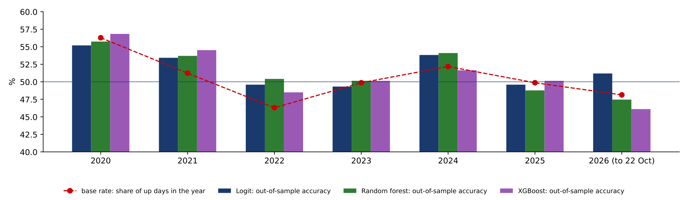
The Brier score showed that the probabilities are worse than a constant. The reliability diagram on the left shows why. The test days are grouped by their forecast probability \(p_t\) into bins of width 0.03 around 0.5, open at both ends, and for each bin the share of up days is plotted against the mean forecast. A calibrated forecast lies on the dashed diagonal: among the days on which it says 0.55, 55% are up days. The right panel shows the histograms of the forecast probabilities.
The logit is cautious: 90% of its probabilities lie between 0.475 and 0.607. Its points lie near, but below, the diagonal at the top: when it says 0.59 on average, 53% of the days are up days. XGBoost is the opposite. It spreads its probabilities from 0.36 to 0.71 (5% and 95% quantiles), yet up days are 49% in its lowest bin and 51% in its highest. Its forecasts are confident and almost uninformative, which is exactly what the Brier score penalises: XGBoost has the worst Brier score of the three, 0.2611.
A model can therefore have an accuracy above 50% and still produce probabilities that should not be used as probabilities, for example to size positions. Calibration can be checked, and corrected, only on data that were not used to fit the model.
In brief
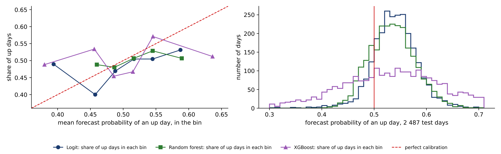
The left panel shows the gap between in-sample (dark blue) and out-of-sample (orange) accuracy for the three classifiers, with the dashed line at the base rate of 50.6%. The in-sample bars grow with the flexibility of the model; the out-of-sample bars stay just above the dashed line.
The right panel explains the predictions of XGBoost with Shapley additive explanations (SHAP) of Lundberg & Lee (2017). SHAP splits each prediction into a baseline and contributions of the features,
where \(\phi_j\) is the average marginal contribution of feature \(j\) over all orders in which the features can be added to the model. The bars show the mean absolute contribution of each feature over the last 400 test days. The largest contributions come from today's return and the 5-day volatility; the day of the week ranks fourth.
SHAP explains the model, not the market. A feature with a large \(|\phi_j|\) in a model that has no forecasting skill is not evidence that the feature predicts returns: it only shows what the model relies on.
In brief
The chart plots the cumulative log return, after costs of 10 bp, of buy-and-hold and of the three strategies from January 2020 to October 2026. The gains over buy-and-hold come in a few episodes, in 2020–2021 and in parts of 2022, when the strategies were partly in cash during falls; between these episodes the curves move in parallel with buy-and-hold.
A strategy that is long 65–85% of the time inherits the market's drawdowns: the maximum drawdowns are 69–80% against 77% for buy-and-hold. On the log scale of the chart these drawdowns are falls of 116–161 log points (145 for buy-and-hold). A fall of more than 100 log points is not a loss of more than 100% of wealth: a fall of 145 log points leaves \(e^{-1.45} = 23\%\) of the peak wealth, a drawdown of 77%.
In brief
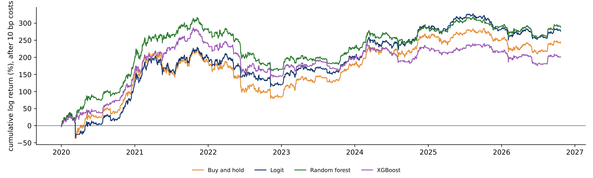
Section summary
Machine-learning classifiers predict the direction of Bitcoin barely better than "always up": 51.3–51.7% out of sample against a base rate of 50.6%, with Brier scores worse than a constant. In-sample accuracy grows with flexibility and says nothing about forecasting skill, and the trading gains are within one standard error of buy-and-hold.
Data snooping means using the same data both to search for a model and to evaluate it. If many rules are tried and the best is reported, its performance is overstated, even when none of the rules has any skill. The section quantifies this effect and applies the corrections to a search over 810 trading rules.
Suppose \(N\) trading rules are tested and none has skill: the true Sharpe ratio of each is zero. The estimated Sharpe ratios still vary by chance, and the best of them is positive and grows with \(N\). For \(N\) independent rules, the expected maximum is approximately
where \(V[\widehat{\mathrm{SR}}_n]\) is the variance of the estimated Sharpe ratios across rules, \(\Phi^{-1}\) the quantile function of the standard Normal distribution and \(\gamma \approx 0.5772\) the Euler–Mascheroni constant. Here SR is in daily units, the annualised SR divided by \(\sqrt{365}\).
The probabilistic Sharpe ratio (PSR) is the probability that the true SR exceeds a benchmark \(\mathrm{SR}^*\), given the estimate \(\widehat{\mathrm{SR}}\) over \(T\) days and the skewness \(\hat\gamma_3\) and kurtosis \(\hat\gamma_4\) of the daily returns:
Heavy tails and negative skewness widen the denominator and lower the PSR. The deflated Sharpe ratio (DSR) of Bailey & López de Prado (2014) is \(\mathrm{PSR}(\mathrm{SR}_0)\): the benchmark is no longer zero but the best Sharpe ratio expected by chance from formula (7.7). The usual threshold is 0.95: a DSR above it means a probability of at least 95% that the true SR of the winner exceeds \(\mathrm{SR}_0\).
A second approach, the reality check of White (2000), simulates the distribution of the best SR when no rule has skill, by resampling the returns; here with 1,000 samples of the stationary bootstrap, which resamples blocks of consecutive days (mean length 20 days) to keep their dependence. For illustration, the lecture also uses 200 random permutations of the returns; shuffling the days destroys volatility clustering, so this version is less realistic.
The lecture's design has 810 rules: 560 moving-average crossovers MA(\(s\),\(l\)), which are long when the \(s\)-day average of the log price is above the \(l\)-day average, and 250 momentum rules MOM(\(k\)), which are long when the return over the last \(k\) days is positive. The rules are selected on 2018–2022 and evaluated on 2023 – 23 October 2026.
In brief
The left panel plots, for each of the 810 rules, its Sharpe ratio in the selection period 2018–2022 (horizontal axis) against its Sharpe ratio in the evaluation period 2023–2026 (vertical axis). The dashed line is buy-and-hold in 2023–2026, and the red point is the best rule in the selection period. The right panel is the histogram of the best SR among the 810 rules in 200 permutations of the returns, with the red line at the SR of the best rule on the actual data.
The best rule in 2018–2022 is MOM(2), long when the return of the last two days is positive, with SR \(= 0.84\) against 0.04 for buy-and-hold. In 2023–2026 its SR falls to 0.45, against 0.90 for buy-and-hold, and it ranks 779th of 810. The cloud of points shows why: the rank correlation between in-sample and out-of-sample SR is only 0.15, and only 12% of the rules beat buy-and-hold after 2022.
The corrections reach the same conclusion before the evaluation period is seen. In the permutations, the best of 810 rules reaches an SR of 0.55 on average and 0.93 at the 95th percentile, so the winner's 0.84 has \(p = 0.095\); the reality check with the stationary bootstrap gives \(p = 0.31\). The PSR against zero is 0.97, but the DSR with \(N = 810\) is 0.72: once the search is counted, the winner is not significant.
The 810 rules are strongly correlated, since neighbouring windows give similar signals, so the effective number of independent trials is smaller than 810. With \(N = 100\) the DSR is 0.80 and with \(N = 10\) it is 0.89, still below 0.95.
In brief
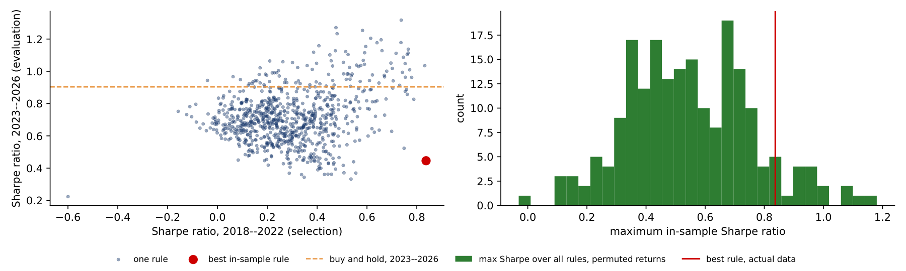
The deflated Sharpe ratio depends on the number of rules tried, \(N\). The chart shows how. The left panel plots the expected best annualised Sharpe ratio of \(N\) rules with no skill, \(\mathrm{SR}_0\) from formula (7.7), using the spread of the 810 in-sample Sharpe ratios of the lecture's rules; the red dashed line is the Sharpe ratio of the winner, 0.84, and the dotted line marks \(N = 810\).
The expected best Sharpe ratio grows quickly with \(N\): 0.09 for two rules, 0.29 for ten, 0.46 for a hundred and 0.58 for 810. The winner's 0.84 stays above \(\mathrm{SR}_0\) at every \(N\) shown, but the margin shrinks as the search grows.
The right panel turns the margin into the DSR, the probability that the true Sharpe ratio of the winner exceeds \(\mathrm{SR}_0\). It falls below the threshold of 0.95 already from \(N = 3\) rules, and reaches 0.72 at \(N = 810\). Even if the 810 correlated rules count as far fewer independent trials, the winner is not significant once the search is taken into account.
In brief
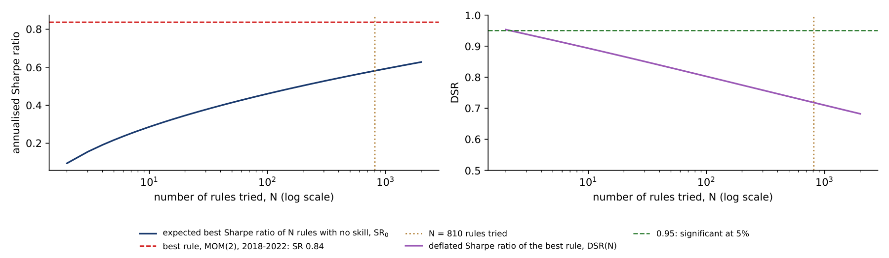
The worked example computes the DSR of the winner step by step. The winning rule is MOM(2), long when the price is above its level two days earlier. Over the \(T = 1{,}826\) days of 2018–2022 its daily Sharpe ratio is \(\widehat{\mathrm{SR}} = 0.0438\), which is \(0.0438 \times \sqrt{365} = 0.84\) annualised; the skewness of its daily returns is \(\hat\gamma_3 = 0.58\) and their kurtosis \(\hat\gamma_4 = 11.46\).
The first step measures how much the Sharpe ratios of the 810 rules vary: the standard deviation of their daily values is 0.00953. The second step takes the two Normal quantiles of formula (7.7) for \(N = 810\): \(\Phi^{-1}(1 - 1/810) = 3.027\) and \(\Phi^{-1}(1 - 1/(810e)) = 3.317\). The third step combines them with Euler's constant: \(\mathrm{SR}_0 = 0.00953 \times (0.423 \times 3.027 + 0.577 \times 3.317) = 0.00953 \times 3.195 = 0.0304\), or 0.58 annualised.
The fourth step computes the denominator of the PSR, which corrects for skewness and heavy tails: \(\sqrt{1 - 0.58 \times 0.0438 + \frac{11.46 - 1}{4} \times 0.0438^2} = \sqrt{0.980} = 0.990\). The fifth step forms the statistic \((0.0438 - 0.0304) \times \sqrt{1{,}825}/0.990 = 0.578\) and the DSR \(= \Phi(0.578) = 0.72\).
The same steps with the benchmark \(\mathrm{SR}^* = 0\) give \(0.0438 \times \sqrt{1{,}825}/0.990 = 1.89\) and a PSR of \(\Phi(1.89) = 0.97\). Against zero the winner looks significant; against the best result expected from a search of 810 rules it does not. The only difference between the two verdicts is that the second counts the search.
In brief
Section summary
The best of 810 trading rules in 2018–2022 ranked 779th in the following years. The deflated Sharpe ratio and the reality check would have flagged the winner as a likely product of the search, and reporting the number of rules tried is the minimum needed to judge any back-test.
The direction of tomorrow's return is hard to forecast; its size is easier, because volatility clusters (Lecture 3). The section compares six forecasts of Bitcoin's one-day Value-at-Risk, three classical, two from machine learning and one from a pretrained model, with two scoring rules that can rank them differently.
Let \(q_t\) be the \(\alpha\)-quantile of the return \(r_t\) given information up to day \(t-1\); for small \(\alpha\) it is negative. The one-day Value-at-Risk (VaR) is \(\mathrm{VaR}_t = -q_t\), a positive loss (Lecture 3). The lecture uses \(\alpha = 1\%\) and \(5\%\), written VaR 1% and VaR 5%, with returns in percent.
The three classical models are those of Lecture 3. Historical simulation (HS) takes the empirical \(\alpha\)-quantile of the last 500 returns. The exponentially weighted moving average with a Normal quantile (EWMA-N) updates the variance as \(\sigma_t^2 = 0.94\,\sigma_{t-1}^2 + 0.06\, r_{t-1}^2\) and sets \(q_t = \Phi^{-1}(\alpha)\sigma_t\). The GARCH(1,1)-t model, a generalised autoregressive conditional heteroskedasticity model with Student-\(t\) errors, gives \(q_t = \mu + \sigma_t\, t_\nu^{-1}(\alpha)\sqrt{(\nu-2)/\nu}\) and is refitted every 21 days.
The two machine-learning models forecast the quantile directly. The linear quantile regression (QReg) of Koenker & Bassett (1978) uses heterogeneous autoregressive (HAR) terms, volatilities over different horizons:
where \(\mathrm{RV}^{(k)}\) is the root mean square return over the last \(k\) days. The gradient-boosted quantile trees (QGBM) fit 300 trees that minimise the quantile loss on 9 features (returns, volatilities and the volume change), on a rolling window of 1,500 days.
The pretrained model is Chronos-2 of Ansari et al. (2025), a transformer neural network trained on a large collection of real and synthetic time series. It returns quantiles from 1% to 99% directly and is used zero-shot: no parameter is fitted to Bitcoin, and its only input is the last 512 daily returns. The version of the model is fixed, as explained below. Forecasts start on 1 June 2022, and the test period runs from 1 January 2024 to 23 October 2026, \(T = 1{,}027\) days.
In brief
The usual check of a VaR forecast counts breaches, the days on which the loss exceeds the VaR: \(h_t = \mathbb{1}\{r_t < q_t\}\). The breach rate \(\bar h\) should be close to \(\alpha\). The Kupiec likelihood ratio (LR) test asks whether \(\bar h = \alpha\), and the Christoffersen test whether breaches occur independently over time rather than in clusters (Lecture 3).
The breach rate checks only the average level of the forecast. The quantile score (QS), also called pinball loss, scores every day:
On a day without a breach the loss is \(\alpha\) times the distance between the return and the quantile; on a breach day it is \(1-\alpha\) times that distance, so a breach costs 99 times more per unit for \(\alpha = 1\%\). The QS is strictly consistent for the quantile: its expected value is minimised only by the true conditional quantile. The breach rate is not. A forecast equal to \(-\infty\) on 99% of days and \(+\infty\) on the remaining 1% has a perfect breach rate and is useless.
Two models \(A\) and \(B\) are compared with the Diebold–Mariano (DM) test on the daily loss difference \(d_t = \mathrm{QS}^{A}_t - \mathrm{QS}^{B}_t\):
where \(\hat\Omega_d\) is the long-run variance of \(d_t\), estimated with the heteroskedasticity- and autocorrelation-consistent (HAC) method of Newey and West. In short, the breach rate answers "is the level right on average?", while the mean QS answers "how large is the average loss?", with a loss whose expectation is smallest for the true quantile.
In brief
The left panel draws the quantile score of a single day for \(\alpha = 1\%\) as a function of the forecast error \(r - q\). When the return falls below the forecast quantile (a breach, \(r - q < 0\)), the loss grows with slope 0.99 per percentage point; when the return stays above it, the loss grows with slope 0.01. A breach of 5 points therefore costs 4.95, while a day 5 points above the quantile costs 0.05. The asymmetry reflects the level: the 1% quantile should be breached on only one day in a hundred.
The right panel shows why this score rewards the true quantile. For each constant forecast \(q\) between \(-16\%\) and \(-1\%\) it computes the mean score over the 1,027 test days, 1 January 2024 – 23 October 2026. The curve is lowest, 0.0827, at the empirical 1% quantile of the test returns, \(-6.48\%\). A constant \(q = -5\%\), too close to zero, gives 2.6% breaches and a mean score of 0.0912; a constant \(q = -10\%\), too far out, gives 0.1% breaches and 0.1057.
The horizontal line is the mean score of GARCH-t, 0.0803. It lies below the whole curve: a forecast that moves with the volatility of the market beats every fixed quantile, even the one chosen with hindsight. This is the gain from conditioning on information, measured in the same units as the comparisons between models.
In brief
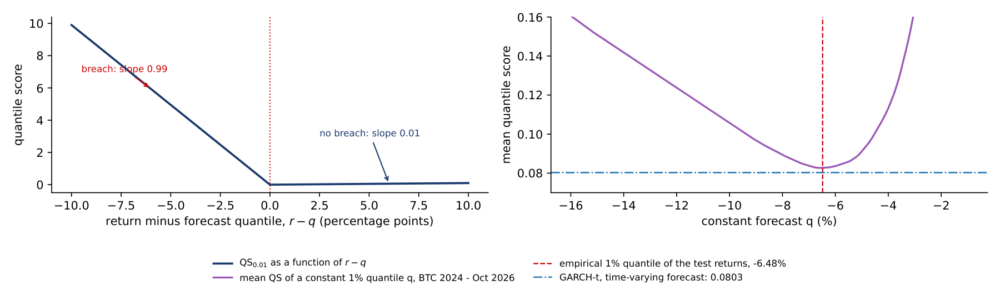
Two days of the GARCH-t forecast show how the quantile score works in practice. On day A, 5 March 2024, GARCH-t forecast a 1% quantile of \(q = -10.62\%\), a VaR of 10.62%, and Bitcoin fell 6.86%. The error is \(r - q = -6.86 + 10.62 = 3.76 > 0\), so there is no breach and the indicator is 0. The score is \(3.76 \times 0.01 = 0.0376\): a large loss, but above the forecast, costs little, and the small cost comes from a VaR set further out than needed.
On day B, 5 February 2026, GARCH-t forecast \(q = -8.92\%\), a VaR of 8.92%, and Bitcoin fell 15.23%. Now \(r - q = -15.23 + 8.92 = -6.32 < 0\), the indicator is 1, and the score is \(-6.32 \times (0.01 - 1) = 6.25\), 166 times the score of day A.
Over the 1,027 test days the mean score of GARCH-t is 0.0803, a total of 82.5; day B alone contributes 7.6% of it. The mean quantile score is therefore driven by a handful of breach days. With about ten breaches expected at the 1% level, the difference in mean score between two models depends on a few days, which is why the Diebold–Mariano tests of the table rarely reject.
In brief
The table reports, for each of the six models, the breach rate, the Kupiec and Christoffersen p-values, the mean QS and the DM p-value against GARCH-t, at \(\alpha = 1\%\) (left) and \(5\%\) (right). At 1%, 1,027 test days lead to 10.3 expected breaches.
At VaR 1%, all models except EWMA-N pass the coverage tests. EWMA-N breaches on 2.14% of days, more than twice the target, and the Kupiec test rejects it (p 0.001): the Normal quantile is too thin for Bitcoin's tails. The breach rate closest to 1% belongs to QGBM (1.07%), but QGBM does not have the lowest QS. GARCH-t has the lowest mean QS in this test, 0.0803, with 7 breaches (0.68%) against 10.3 expected: it is slightly conservative.
The DM tests show that the differences in QS are small relative to their noise. At 1%, we detect no difference in expected QS between GARCH-t and any other model; all DM p-values are 0.18 or higher. For example, Chronos-2 minus GARCH-t is 0.0025, with a 95% confidence interval of \([-0.0053, 0.0102]\). Not rejecting equality does not show that the models are equally good: with about 10 expected breaches, the test has little power.
At VaR 5% there are about five times as many breaches, which gives the tests more power. All models pass the Kupiec test at 5%, and QGBM is the weakest by QS, with a DM p-value of 0.07 against GARCH-t.
In brief
| \(\alpha = 1\%\) (10.3 breaches expected) | \(\alpha = 5\%\) | |||||||||
|---|---|---|---|---|---|---|---|---|---|---|
| model | breach % | Kupiec p | Christ. p | QS | DM p | breach % | Kupiec p | QS | DM p | |
| HS | 1.17 | 0.60 | 0.59 | 0.0842 | 0.45 | 5.36 | 0.61 | 0.2782 | 0.57 | |
| EWMA-N | 2.14 | 0.001 | 0.33 | 0.0880 | 0.18 | 5.26 | 0.71 | 0.2785 | 0.18 | |
| GARCH-t | 0.68 | 0.28 | 0.76 | 0.0803 | – | 5.65 | 0.35 | 0.2748 | – | |
| QReg | 0.88 | 0.68 | 0.69 | 0.0822 | 0.71 | 3.89 | 0.09 | 0.2755 | 0.92 | |
| QGBM | 1.07 | 0.82 | 0.63 | 0.0848 | 0.36 | 6.13 | 0.11 | 0.2875 | 0.07 | |
| Chronos-2 | 1.27 | 0.41 | 0.56 | 0.0827 | 0.54 | 5.16 | 0.81 | 0.2773 | 0.71 | |
The breach rates of the table are totals over the whole test period. The chart shows how they accumulate. Each step line counts the breaches of one model's 1% VaR from 1 January 2024 to 23 October 2026; the red dashed line is the expected count, \(0.01 \times\) the number of days, which reaches 10.3 at the end, and the shaded band is the 95% range of a binomial count on each day, 5 to 17 breaches at the end.
EWMA-N, with its Normal quantile, leaves the band on 5 August 2024 and is above it on 553 days from then on; it ends with 22 breaches, the failure of the Kupiec test in the table. Historical simulation and Chronos-2 rise above the band on some days in 2024, HS between April and August and Chronos-2 between April and October: Chronos-2 had 7 breaches in 2024, against 3.7 expected. Both then return inside the band.
GARCH-t, QReg and QGBM stay inside the band throughout, with 7, 9 and 11 breaches. The chart shows that a total breach count within the band can hide a period of too many breaches, and that a backtest over a short window can give a different verdict from the same backtest over the full period.
In brief
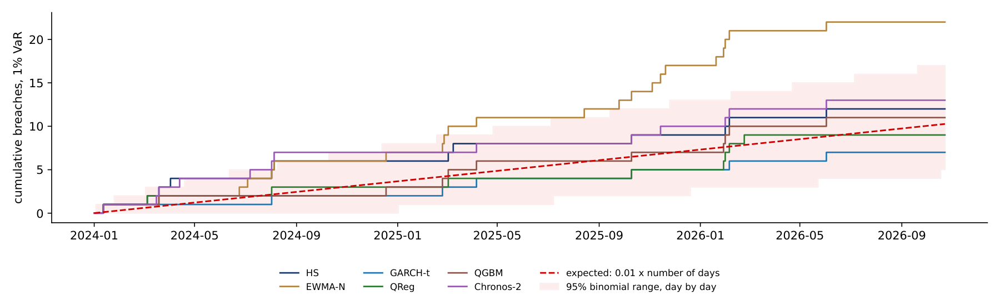
The left panel shows the breach rate of each model at VaR 1%, with the target of 1% as a dashed line; the right panel shows the mean quantile score, where lower is better. The two rankings differ. Closest to the target are QGBM, HS and Chronos-2; lowest in QS are GARCH-t, QReg and Chronos-2.
Note that the vertical axis of the right panel starts at 0.0725, which makes the differences in QS look larger than they are; the DM tests above found none of the differences at VaR 1% significant. The disagreement between the panels has a simple cause. A forecast can hit the right number of breaches on average while being too high on calm days and too low on volatile days. The breach rate does not see this; the QS penalises both errors.
In brief
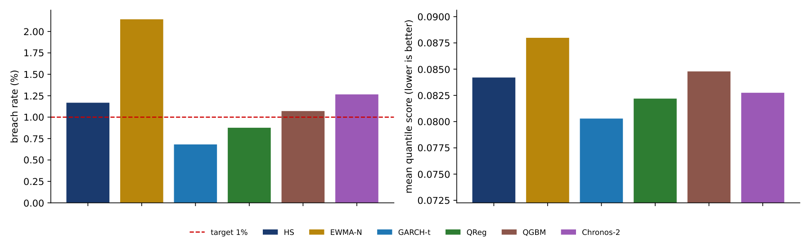
The chart shows the 1% return quantiles \(q_t\) of three models from January 2024 to October 2026: GARCH-t (dark blue), QGBM (green) and Chronos-2 (purple), with the daily Bitcoin log returns as orange bars. The VaR is \(-q_t\), so a line further down means a higher VaR. Red points mark breaches of the Chronos-2 quantile, and the dotted vertical line marks the release of Chronos-2 on 20 October 2025.
The most striking feature is a single spike of the tree model. On 14 January 2024, the VaR 1% of QGBM jumps from 7.3% to 35.4%, while that of GARCH-t moves from 9.9% to 9.4%. The input behind the jump was a return of \(-7.9\%\) on 12 January, the day after the launch of the spot Bitcoin exchange-traded funds (ETFs), followed by a 52% fall in volume on 13 January: a combination that the trees had met only in crash periods.
Trees do not extrapolate smoothly. An unusual input lands in an extreme leaf of a tree, and the forecast jumps to the value learnt from the few crash days in that leaf. A risk manager using such a model needs bounds on the forecast or a fallback rule, such as a classical model that takes over when the ML forecast moves too far in one day.
In brief
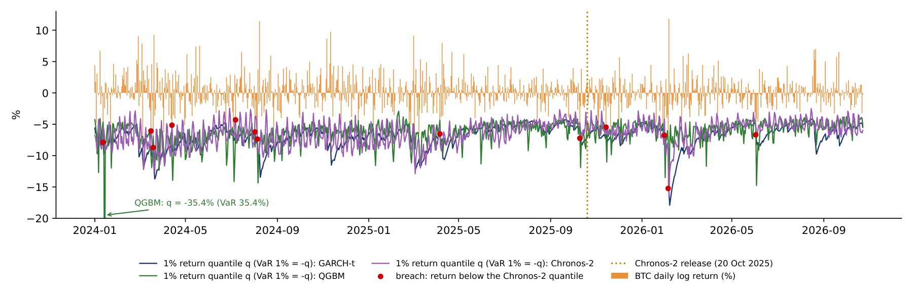
A pretrained model raises a problem that a model fitted by the analyst does not: it may have seen the test period during its training. Chronos-2 was released in October 2025, and its training corpus may include Bitcoin prices for 2024–2025. Only forecasts made after the release are clean; earlier forecasts are a retrospective back-test that may benefit from look-ahead, the use of information not available at the forecast date.
A second problem is reproducibility. The model is loaded from the Hugging Face platform as `amazon/chronos-2`, revision `29ec376` (unchanged since 5 June 2026), with the package `chronos-forecasting` version 2.3.2. Loading the model by name without a revision can bring different weights later, and the results would change without notice.
The table checks for look-ahead by splitting the test period at the release date, 20 October 2025, and comparing the mean QS at VaR 1% before (659 days) and after (368 days). Chronos-2 ranks third in both periods, with a QS of 0.082 before and 0.084 after. The best model changes, from GARCH-t (0.077) before to QReg (0.077) after, and EWMA-N breaches on 2.17% of days after the release. Chronos-2 shows no sign of an advantage from leaked data, but 368 days with about 4 expected breaches cannot prove that there was none.
The same problem is stronger for large language models (LLMs), which are trained on large parts of the internet, including news and prices: a back-test of an LLM must use dates after its training cut-off. Other pretrained models have other limits: TimesFM 2.5 returns only deciles, from 10% to 90%, so it cannot give a VaR 1% without extrapolating beyond its output.
In brief
amazon/chronos-2, revision 29ec376 (unchanged since 5 June 2026), package chronos-forecasting 2.3.2; a name without a revision can load other weights later| HS | EWMA-N | GARCH-t | QReg | QGBM | Chronos-2 | |
|---|---|---|---|---|---|---|
| before release (659 days): QS | 0.081 | 0.083 | 0.077 | 0.085 | 0.086 | 0.082 |
| after release (368 days): QS | 0.089 | 0.097 | 0.087 | 0.077 | 0.083 | 0.084 |
| after release: breach % | 0.82 | 2.17 | 0.54 | 1.09 | 1.09 | 1.09 |
The look-ahead check split the test period at one date. The chart follows the comparison continuously: for each model it plots the mean 1% quantile score over the last 365 days minus that of GARCH-t, in units of \(10^{-3}\). Below zero, the model has had the lower mean score over the past year; the first window ends on 30 December 2024.
In the last window, to 23 October 2026, three models are ahead of GARCH-t: QReg by 9.9, QGBM by 3.4 and Chronos-2 by 2.7 units. EWMA-N (10.3 units) and HS (2.6) are behind. Over all windows, however, Chronos-2 is ahead in only 16% of them and QReg in 38%. The dotted line marks the release of Chronos-2, 20 October 2025.
The jumps in the lines are single breach days entering or leaving the 365-day window. A breach of a few percentage points changes a model's mean score over a year by \(0.01\) or more, the same order as the differences between models, against a mean score of about 0.08. Rankings over one year are therefore unstable, and a ranking reported for one period should not be expected to hold in the next.
In brief
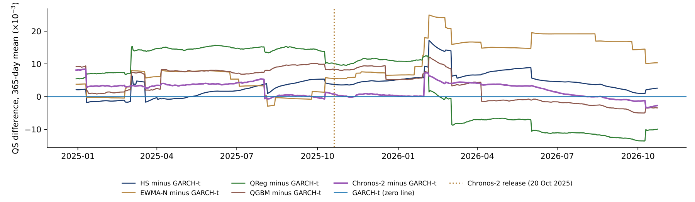
Section summary
For Bitcoin's VaR 1% in 2024–2026, the ML and pretrained models do not differ detectably from GARCH-t in quantile score. Breach rate and QS rank the models differently, tree models can produce extreme jumps after unusual inputs, and a pretrained model must be tested on dates after its release, with a fixed version.
The results of the first three sections are not specific to the models chosen. They follow from features of crypto data and of the way models are evaluated. The section collects them in seven limits.
The first limit is low signal. The daily direction of Bitcoin is close to a coin toss: the base rate is 50.6% and the best out-of-sample accuracy 51.7%. More flexible models add variance to the forecast, not signal. The second is non-stationarity: market regimes change, from the boom of 2020–2021 to the crash of 2022 and the era of the ETFs from 2024, and what is learnt in one regime may not transfer to the next. The falling accuracy by year and the failed correction of historical simulation in the Appendix are two examples.
The third limit is the small number of tail observations. A 1% quantile estimated from 500 days rests on about 5 observations, so tail models are noisy by construction (Lectures 3 and 5). The fourth is data snooping: testing many models and reporting the best inflates performance, so the number of trials must be reported and the result deflated. The fifth is look-ahead: pretrained models and LLMs may have seen the test period, features must be known at the forecast time, and model selection must use only past data, the problem of the BitMood trading rule in Lecture 6.
The sixth limit is survivorship: today's list of coins leaves out the coins that failed, so results computed on survivors overstate performance. The seventh is that explanation is not cause: SHAP values and feature importances describe the model, and causal claims need a design such as the event study of Lecture 6.
ML does have uses in this field when it is evaluated out of sample with the right score: flexible quantile forecasts with no detectable loss against GARCH, early-warning classifiers that combine many features (Lecture 4), and text-based sentiment indices (Lecture 6).
In brief
The section describes the format of the exam and lists, lecture by lecture, the tools and results that students should be able to interpret. It ends with a worked model answer.
The exam is written, lasts 90 minutes and is closed book; one A4 formula sheet is allowed. The proposed weights, still to be agreed with Prof. Alon and the programme coordinator, are 60% of the final grade for the exam and 40% for the Crypto Economics project with Prof. Alon; attendance is strongly recommended.
The exam has two parts. Part A, 40% of the exam, has 20 multiple-choice questions on concepts and on reading charts and model output. Part B, 60%, has three short interpretation problems built on real output from the course: tables, charts and tests. No calculation is required.
A complete answer in Part B has three parts. The first says what is measured: the name of the statistic and its null hypothesis or benchmark. The second says what the number says: its direction, size and significance, in the units of the problem. The third says what it does not say: the relevant limitation, such as sample size, regime, multiple testing, look-ahead, or association rather than cause. Answers should use the vocabulary of the course precisely, for example "significant at 5%", "out of sample", "fails the Kupiec test" or "heavy tails". The interpretation exercises at the end of each lecture and the practice exam with solutions are the best preparation.
In brief
Lecture 1 treated blockchains as data. The hash rate follows from the published difficulty, \(\hat H = D \cdot 2^{32}/600\), and measures the cost of securing the network. The supply rule caps Bitcoin at 21 million BTC, with the block subsidy halved every 210,000 blocks; after the 2024 halving, new issuance adds 0.82% a year to the supply. The Herfindahl–Hirschman index (HHI), \(\sum s_i^2\) over the market shares \(s_i\), measures concentration; two issuers hold 85% of all stablecoins. Growth was measured with log-linear trends and their standard errors, and every data set was checked before analysis.
Lecture 2 studied stylised facts, efficiency and bubbles. Volatility is annualised with \(\sqrt{365}\), because crypto trades every day. Heavy tails are detected with the Jarque–Bera test and quantile–quantile plots, and volatility clustering with the Ljung–Box statistic \(Q(m)\) on squared returns \(r_t^2\), compared with the same test on \(r_t\). Weak-form efficiency is tested with the variance ratio \(\mathrm{VR}(k) = \mathrm{Var}(r_t^{(k)})/(k\,\mathrm{Var}(r_t))\) and its robust test. Bubbles were modelled with the log-periodic power law (LPPL), whose critical time \(t_c\) is a fitted parameter, not a forecast, and network value with Metcalfe's law \(V \propto N^b\).
In brief
Lecture 3 modelled volatility and tail risk. The GARCH(1,1) model, \(\sigma_t^2 = \omega + \alpha r_{t-1}^2 + \beta\sigma_{t-1}^2\), has persistence \(\alpha + \beta\) and a half-life of shocks, and Student-t errors capture heavy tails. Value-at-Risk and expected shortfall (ES) were computed with four methods: Normal, historical simulation, EWMA and GARCH-t. The backtests were the Kupiec test of the breach frequency, the Christoffersen test of independent breaches and the Basel traffic light. An out-of-sample period showed what a short new period can and cannot reveal about a model.
Lecture 4 studied the depegs of stablecoins. The deviation from the peg is measured in basis points, \(d_t = 10^4(P_t - 1)\), and grouped into breach episodes whose sizes follow power-law tails. Automated market makers (AMM) price with the constant product \(xy = k\) or with the StableSwap curve, and the composition of a pool can give an early signal of stress. Alarms were evaluated at the level of events: detection rate, lead time, false alerts and utility.
In brief
Lecture 5 built the depeg pressure index (DPI). The check loss \(\rho_\tau(u) = u(\tau - \mathbb{1}\{u<0\})\) defines the 5% Quantile Lasso, whose penalty \(\lambda\) is selected by generalised approximate cross-validation (GACV). The DPI is the average selected penalty: a higher \(\lambda\) means stronger tail co-movement, and under pressure fewer but stronger tail links remain. The lecture also separated in-sample fit from skill on held-out data.
Lecture 6 covered networks, sentiment and asset classes: the correlation distance \(d_{ij} = \sqrt{2(1-\rho_{ij})}\), the minimum spanning tree and the absorption ratio; Diebold–Yilmaz spillovers (total, TO, FROM and NET); event studies with abnormal and cumulative abnormal returns (AR, CAR) and cross-sectional tests; factor analysis and classification of asset classes; and sentiment indices with out-of-sample selection.
Lecture 7 added walk-forward evaluation; the base rate, Brier score, AUC and PT test; the distinction between in-sample and out-of-sample results; data snooping and the deflated Sharpe ratio; breach rate against quantile score; and look-ahead in pretrained models.
In brief
The example applies the three-part answer to a question on the VaR results: "Bitcoin VaR 1%, 2024 – October 2026: QGBM has a breach rate of 1.07%, GARCH-t of 0.68%; GARCH-t has the lower mean QS (DM p \(= 0.36\)). Which model is better?"
What is measured. The breach rate checks the average level of the VaR 1%. The mean QS is an average loss whose expectation is smallest for the true quantile. The DM test asks whether the difference in mean QS between the two models is zero.
What the numbers say. QGBM is closer to 1% on average. GARCH-t is slightly conservative, with fewer breaches than expected, but has the lowest mean realised QS in this test. The two criteria disagree because a model can hit 1% on average by being too high on calm days and too low on volatile days, and only the QS penalises that.
What it does not say. The numbers do not show that GARCH-t is better. The difference in QS, QGBM minus GARCH-t, is 0.0045, with a 95% interval of \([-0.0051, 0.0141]\) and DM p \(= 0.36\): no difference is detected, and 1,027 days hold only about 10 expected breaches.
In brief
Machine learning does not predict the direction of Bitcoin in a useful way. Out-of-sample accuracy is 51.3–51.7% against a base rate of 50.6%, the Brier scores are worse than a constant estimated from past data, and XGBoost classifies 78% of training days correctly but only 51% of new ones. Among 810 trading rules, the best one in 2018–2022 ranked 779th afterwards, and its deflated Sharpe ratio, 0.72, flags it once the search is counted.
For VaR 1%, no difference in quantile score from GARCH-t is detected for the ML and pretrained models; GARCH-t has the lowest mean realised QS and QGBM the breach rate closest to 1%. Chronos-2 forecasts without being fitted to Bitcoin and keeps its rank after its release date, but look-ahead in pretrained models must still be ruled out by the design of the test.
In brief
The five exercises use the numbers of the lecture and follow the format of Part B of the exam: what is measured, what the number says and what it does not say. They cover in-sample against out-of-sample accuracy, the Brier score against a constant, the deflated Sharpe ratio of a selected rule, breach rate against quantile score, and look-ahead in a pretrained model.
In brief
The Appendix holds optional material for self-study; it is not examined. It studies a simple correction of a risk forecast with its own past errors: the theory of when it helps, a simulation, and its effect on the six Bitcoin forecasts and on their Basel zones.
A biased quantile forecast can be shifted by its own past errors. On a calibration window of \(n\) days the errors are \(e_t = r_t - q_t\); if the forecast were right, \(P(e_t < 0) = \alpha\). The fitted correction \(\hat c = \hat Q_\alpha(e_{t-n}, \dots, e_{t-1})\) is the empirical \(\alpha\)-quantile of the errors, so that \(P(e < \hat c) \approx \alpha\) on the calibration window, and the corrected forecast with intensity \(\lambda\) is
with \(\lambda = 0\) (Raw), \(\tfrac12\) (Half) or 1 (Full). The static version fits \(\hat c\) once on the 500 errors before the test and keeps it fixed; the rolling version refits it every day on the last 500 errors. Full sets the breach rate on the calibration window to about \(\alpha\), exactly only up to ties and interpolation. The method resembles split-conformal calibration, but the coverage guarantee of conformal methods needs exchangeable errors, which a rolling window of a time series does not ensure. The real question is whether the correction lowers the QS on future days; a breach rate closer to \(\alpha\) is not the same thing.
In brief
Let \(\delta\) be the true shift that would minimise the expected QS, the bias of the raw forecast, and \(\hat c = \delta + \varepsilon\) its estimate, with \(V(\varepsilon) = \sigma_Q^2\). With \(f\) the density of the return at the quantile, a second-order expansion gives the excess expected loss \(\Delta(\lambda) \approx \frac f2\left[(1-\lambda)^2\delta^2 + \lambda^2 \sigma_Q^2\right]\): the first term is the bias left uncorrected, the second the noise added by the estimate. Under dependence, \(\sigma_Q^2 \approx \Omega_h/(n f^2)\), where \(\Omega_h\) is the long-run variance of the breach indicator, so the estimation cost falls as \(1/n\). Minimising \(\Delta(\lambda)\) gives the optimal intensity \(\lambda^* = \delta^2/(\delta^2 + \sigma_Q^2)\), a shrinkage factor as in a James–Stein estimator. Comparing the three intensities: Full beats Raw when \(\delta^2 > \sigma_Q^2\), Half beats Full when \(\delta^2 < 3\sigma_Q^2\), Half beats Raw when \(\delta^2 > \sigma_Q^2/3\), and Half is optimal when \(\delta^2 = \sigma_Q^2\). Here \(\delta\) is the bias in the test period: if the bias changes between calibration and test, the fitted \(\hat c\) transfers badly, whatever \(n\) is. Gneiting & Resin (2023) discuss such optimal shifts in the context of calibration diagnostics.
In brief
The simulation draws independent returns from a Student-\(t\) distribution with 5 degrees of freedom, sets \(\alpha = 1\%\) and \(n = 500\), shifts the raw forecast by a bias \(\delta\) and repeats the experiment 20,000 times. The left panel shows the excess expected QS of Raw, Half and Full against the bias in units of the sampling standard deviation of the correction, \(\delta/\sigma_Q\); the dashed lines give the local theory and the dotted lines its crossing points \(1/\sqrt 3\), 1 and \(\sqrt 3\). The right panel shows the expected breach rate. In the simulation, Half beats Raw from \(\delta/\sigma_Q = 0.65\) (theory 0.58), Half beats Full up to 1.40 (theory 1.73), and Full beats Raw from 0.95 (theory 1). With no bias, Full still raises the expected QS and gives 1.19% breaches instead of 1%, because the 1% empirical quantile of 500 errors rests on 5 observations.
In brief
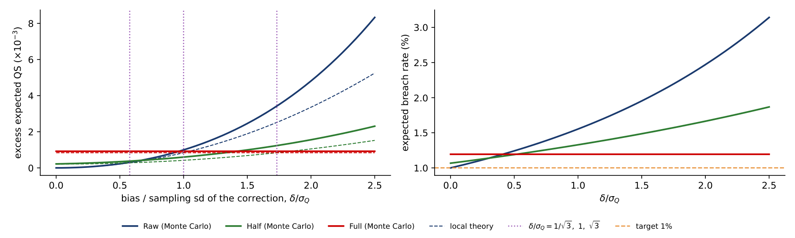
The table applies the static correction to the six VaR 1% forecasts. The column \(\hat c^2/\widehat{\mathrm{se}}^2\) compares the squared correction with its squared standard error, from a block bootstrap with blocks of 20 days: by the previous slide, Full can help only when this ratio is clearly above 1. For HS the ratio is 2.18, yet Full raises the breach rate to 3.21% and worsens the QS by 26%, significant at 1% by the DM test against Raw. In mid-2022 – 2023 the 500-day window of HS still held the 2022 crash, so HS was too conservative and \(\hat c > 0\); the correction lowered the VaR just before the more volatile year 2024. At VaR 5% the same correction gives 14.0% breaches. For EWMA-N the Normal quantile is too thin, \(\hat c = -1.14 < 0\) transfers to the test period, and both corrections help, Half significantly at 5%. For GARCH-t, QGBM and Chronos-2 the ratio is near zero, the correction is noise and changes almost nothing. A rolling daily correction limits the damage for HS, with a QS of 0.0908 instead of 0.1058.
In brief
| \(\alpha = 1\%\) | \(\hat c\) | \(\hat c^2/\widehat{\mathrm{se}}^2\) | breach % (static) | QS (static) | ||||
|---|---|---|---|---|---|---|---|---|
| Raw | Half | Full | Raw | Half | Full | |||
| HS | 1.91 | 2.18 | 1.17 | 2.04 | 3.21 | 0.0842 | 0.0893 | 0.1058\(^{**}\) |
| EWMA-N | \(-1.14\) | 0.36 | 2.14 | 1.66 | 0.97 | 0.0880 | 0.0831\(^{*}\) | 0.0816 |
| GARCH-t | \(-0.06\) | 0.00 | 0.68 | 0.68 | 0.68 | 0.0803 | 0.0804 | 0.0805 |
| QReg | 0.63 | 0.57 | 0.88 | 0.97 | 0.97 | 0.0822 | 0.0821 | 0.0820 |
| QGBM | 0.08 | 0.01 | 1.07 | 1.07 | 1.17 | 0.0848 | 0.0848 | 0.0849 |
| Chronos-2 | 0.33 | 0.05 | 1.27 | 1.36 | 1.36 | 0.0827 | 0.0833 | 0.0839 |
The left panel shows the VaR 1% breach rates of each model under Raw, Half and Full, with the 1% target dashed; the right panel shows the change in QS against Raw, in units of \(10^{-3}\), where a positive bar means a worse forecast. The correction moves breach rates in both directions: up from 1.17% to 3.21% for HS, down from 2.14% to 0.97% for EWMA-N. The same tool has opposite outcomes, and the sign depends on whether the bias of the calibration period persists into the test period.
In brief
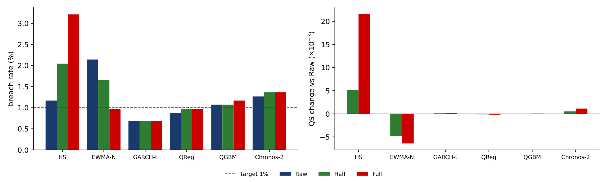
The Basel backtesting zones for a VaR 1% over 250 days (Basel Committee, 2019) are green for 0–4 breaches, amber for 5–9 and red for 10 or more (amber was called "yellow" in the 1996 rules). The rule behind them puts the start of amber where the binomial probability of the breach count reaches 95% and the start of red where it reaches 99.99%; the same rule for a crypto year of 365 days gives green 0–6, amber 7–12 and red 13 or more. The zones here only illustrate the rule: bank capital is computed for the whole trading book, not from a one-asset VaR. In the table, EWMA-N moves from amber to green in both years under Full, with a VaR 1.1 points higher, that is more conservative. HS moves from green to red in 2024 under Full, with 17 breaches and a lower VaR: a worse model. The zone, the VaR level and the forecast quality measured by the QS are three different outcomes of the same correction, and all three should be reported.
In brief
| breaches 2024 (366 days) | breaches 2025 | mean 1% VaR 2024–2025 (%) | ||||||
|---|---|---|---|---|---|---|---|---|
| Raw | Half | Full | Raw | Full | Raw | Full | ||
| HS | 6 | 10 | 17 | 3 | 11 | 6.3 | 4.4 | |
| EWMA-N | 7 | 6 | 3 | 10 | 3 | 5.7 | 6.8 | |
| GARCH-t | 2 | 2 | 2 | 3 | 3 | 7.1 | 7.1 | |
| QReg | 3 | 4 | 4 | 2 | 2 | 7.6 | 7.0 | |
| QGBM | 3 | 3 | 4 | 4 | 4 | 6.5 | 6.4 | |
| Chronos-2 | 7 | 8 | 8 | 3 | 3 | 6.7 | 6.4 | |